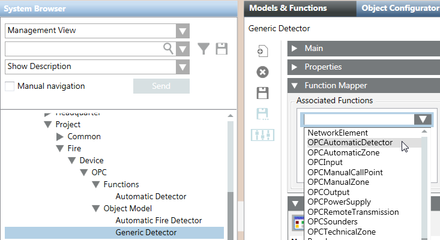

Use Generic Objects in the OPC Fire Library
The Object Model list includes three generic objects (Generic Detector, Generic Object 1, and Generic Object 2), available for special cases, such as video objects. To use the generic objects, you need to link the generic object to a function manually. Proceed as follows:
- In the customized OPC library, under Object Model, select the generic object you customized.
- In the Models & Functions tab, open the Function Mapper expander.
- Click Add.
- A drop-down list displays in the Associated Functions box.
- From the drop-down list, select at least one customized function to link to the generic object.
- Click Save
 .
. - Proceed with the common configuration: copy and link to the generic object the relating generic text group, configure alarms and commands.
